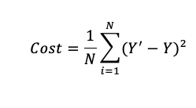
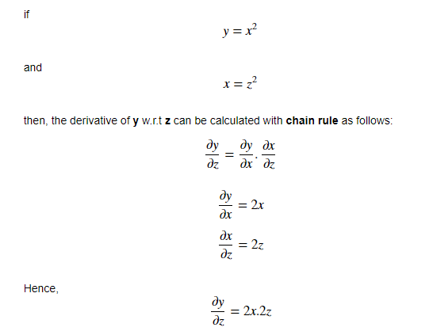
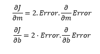
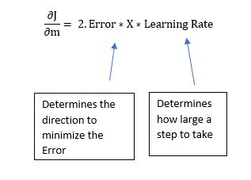

Understanding the Mathematics behind Gradient Descent
A simple mathematical intuition behind one of the commonly used optimisation algorithms in Machine Learning.
“Premature optimization is the root of all evil.”
― Donald Ervin Knuth
Agile is a pretty well-known term in the software development process. The basic idea behind it is simple: build something quickly ➡️ get it out there ➡️ get some feedback ➡️ make changes depending upon the feedback ➡️ repeat the process. The goal is to get the product near the user and let the user guide you with the feedback to obtain the best possible product with the least error. Also, the steps taken for improvement need to be small and should constantly involve the user. In a way, an Agile software development process involves rapid iterations. The idea of — start with a solution as soon as possible, measure and iterate as frequently as possible, is basically Gradient descent under the hood.
Objective
Gradient descent algorithm is an iterative process that takes us to the minimum of a function(barring some caveats). The formula below sums up the entire Gradient Descent algorithm in a single line.

https://www.coursehero.com/file/27927651/Gradient-Descentpdf/
But how do we arrive at this formula? Well, It is actually very simple and just includes some high school maths. Through this article, we shall try to understand as well as recreate this formula in the context of a Linear Regression model.
A Machine Learning Model
- Consider a bunch of data points in a 2 D space. Assume that the data is related to the height and weight of a group of students. We are trying to predict some kind of relationship between these quantities so that we could predict the weight of some new students afterwards. This is essentially a simple example of a supervised Machine Learning technique.
- Let us now draw an arbitrary line in space that passes through some of these data points. The equation of this straight line would be
**Y = mX + b**where m is the slope and b is its intercept on the Y-axis.

Predictions
Given a known set of inputs and their corresponding outputs, A machine learning model tries to make some predictions for a new set of inputs.

ML process
The Error would be the difference between the two predictions.
This relates to the idea of a Cost function or Loss function.
Cost Function
A Cost Function/Loss Function evaluates the performance of our Machine Learning Algorithm. The Loss function computes the error for a single training example while the Cost function is the average of the loss functions for all the training examples. Henceforth, I shall be using both the terms interchangeably.
A Cost function basically tells us ‘ how good’ our model is at making predictions for a given value of m and b.
Let’s say, there are a total of ’N’ points in the dataset and for all those ’N’ data points we want to minimize the error. So the Cost function would be the total squared error i.e

Cost function for N data points
Why do we take the squared differences and simply not the absolute differences? Because the squared differences make it easier to derive a regression line. Indeed, to find that line we need to compute the first derivative of the Cost function, and it is much harder to compute the derivative of absolute values than squared values. Also, the squared differences increase the error distance, thus, making the bad predictions more pronounced than the good ones.
Minimizing the Cost Function
The goal of any Machine Learning Algorithm is to minimize the Cost Function.
This is because a lower error between the actual and the predicted values signifies that the algorithm has done a good job in learning. Since we want the lowest error value, we want those‘ m’ and ‘b’ values which give the smallest possible error.
How do we actually minimize any function?
If we look carefully, our Cost function is of the form **Y = X²**. In a Cartesian coordinate system, this is an equation for a parabola and can be graphically represented as :

Parabola
To minimise the function above, we need to find that value of **X** that produces the lowest value of **Y**which is the red dot. It is quite easy to locate the minima here since it is a 2D graph but this may not always be the case especially in case of higher dimensions. For those cases, we need to devise an algorithm to locate the minima, and that algorithm is calledGradient Descent.
Gradient Descent
Gradient descent is one of the most popular algorithms to perform optimization and by far the most common way to optimize neural networks. It is an iterative optimisation algorithm used to find the minimum value for a function.
Intuition
Consider that you are walking along the graph below, and you are currently at the ‘green’ dot. Your aim is to reach the minimum i.e the ‘red’ dot, but from your position, you are unable to view it.

Figure 2
Possible actions would be:
- You might go upward or downward
- If you decide on which way to go, you might take a bigger step or a little step to reach your destination.
Essentially, there are two things that you should know to reach the minima, i.e. which way to go and how big a step to take.
Gradient Descent Algorithm helps us to make these decisions efficiently and effectively with the use of derivatives. A derivative is a term that comes from calculus and is calculated as the slope of the graph at a particular point. The slope is described by drawing a tangent line to the graph at the point. So, if we are able to compute this tangent line, we might be able to compute the desired direction to reach the minima. We will talk about this in more detail in the later part of the article.
The Minimum Value
In the same figure, if we draw a tangent at the green point, we know that if we are moving upwards, we are moving away from the minima and vice versa. Also, the tangent gives us a sense of the steepness of the slope.

The slope at the blue point is less steep than that at the green point which means it will take much smaller steps to reach the minimum from the blue point than from the green point.
Mathematical Interpretation of Cost Function
Let us now put all these learnings into a mathematical formula. In the equation, y = mX+b, ‘m’ and ‘b’ are its parameters. During the training process, there will be a small change in their values. Let that small change be denoted by δ. The value of parameters will be updated as m=m-δmandb=b-δb respectively. Our aim here is to find those values of m and b iny = mx+b , for which the error is minimum i.e values which minimize the cost function.
Rewriting the cost function:

The idea is that by being able to compute the derivative/slope of the function, we can find the minimum of a function.
The Learning rate
This size of steps taken to reach the minimum or bottom is called Learning Rate. We can cover more area with larger steps/higher learning rate but are at the risk of overshooting the minima. On the other hand, small steps/smaller learning rates will consume a lot of time to reach the lowest point.
The visualisations below give an idea about the Learning Rate concept. See how in the third figure, we reach the minimum point with the minimum number of steps. This is the optimum learning rate for this problem.


Source
We saw that when the learning rate is too low, it takes a lot of steps to converge. On the other hand, when the learning rate is too high, Gradient Descent fails to reach the minimum as can be seen in the visualisation below.

Experiment with different learning rates by visiting the link below.
Derivatives
Machine learning uses derivatives in optimization problems. Optimization algorithms like gradient descent use derivates to actually decide whether to increase or decrease the weights in order to increase or decrease any objective function.
If we are able to compute the derivative of a function, we know in which direction to proceed to minimize it.
Primarily we shall be dealing with two concepts from calculus :
- Power Rule
Power rule calculates the derivative of a variable raised to a power.

- Chain Rule
The chain rule is used for calculating the derivative of composite functions. The chain rule can also be expressed in Leibniz’s notation as follows:
If a variable z depends on the variable y, which itself depends on the variable x, so that y and z are dependent variables, then z, via the intermediate variable of y, depends on x as well. This is called the chain rule and is mathematically written as,
Let us understand it through an example:

- Using the Power and Chain Rule for derivatives, let’s calculate how Cost function changes relative to m and c. This deals with the concept of partial derivatives which says that if there is a function of two variables, then to find the partial derivative of that function w.r.t to one variable, treat the other variable as constant. This will be more clear with an example:

Calculating Gradient Descent
Let us now apply the knowledge of these rules of calculus in our original equation and find the derivative of the Cost Function w.r.t to both ‘m’ and ‘b’. Revising the Cost Function equation :
For simplicity, let us get rid of the summation sign. The summation part is important, especially with the concept of Stochastic gradient descent (SGD ) vs batch gradient descent. During the batch gradient descent, we look at the error of all the training examples at once while in the SGD we look at each error at a time. However, just to keep things simple, we will assume that we are looking at each error one at a time.

Now let’s calculate the gradient of Error w.r.t to both m and b :

Plugging the values back in the cost function and multiplying it with the learning rate:

Now, this 2 in this equation isn’t that significant since it just says that we have a learning rate twice as big or half as big. So let’s just get rid of it too. So, Ultimately, this entire article boils down to two simple equations which represent the equations for Gradient Descent.

m¹,b¹ = next position parameters; m⁰,b⁰ = current position parameters
Hence,to solve for the gradient, we iterate through our data points using our new m and b values and compute the partial derivatives. This new gradient tells us the slope of our cost function at our current position and the direction we should move to update our parameters. The size of our update is controlled by the learning rate.
Conclusion
The point of this article was to demonstrate the concept of gradient descent. We used gradient descent as our optimization strategy for linear regression. by drawing the line of best fit to measure the relationship between student heights and weights. However, it is important to note here that the linear regression example has been chosen for simplicity but can be used with other Machine Learning techniques too.